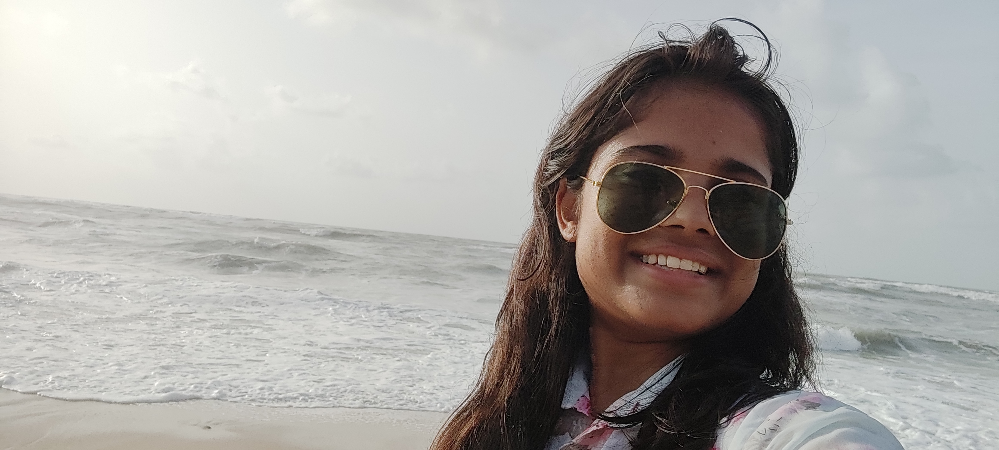

Summary :
I am a good listener and leader which will be a boon to the company as it is the basic need of working in a team.I am also good in communication and handling things with patience.
Education :
- I have done my Higher Schooling from MASD Public Senior Secondary School in my hometown Narnaul.
- Then I completed my 11th and 12th from the DAV Public Senior Secondary School from my hometown again
- After that I prepared for one year for the JEE.
- Right now,I am persuing my BTech from Computer Science from DCURST Murthal University.
Work Experience
I am currently a fresher learning new things and exploring them but looking for great oppportunities ahead and expanding my horizons.
Skills:
- Good Communication
- Leadership Traits
- Management Qualities
- Good Listener
- Abilities to face the challenges and solve them.
Contact Details